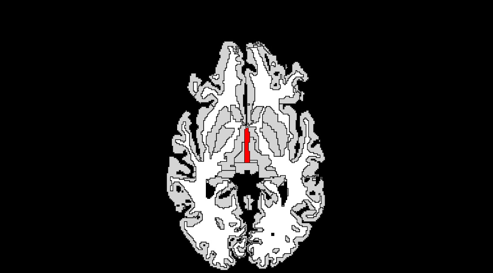

<h3>3rd-Ventricle -- localization</h3>

<br>
<br>
<br>
<h3>3rd-Ventricle -- <a href="../../measurebased/FreeSurfer.subcort/volume.html">volume</a></h3>


<h3>3rd-Ventricle -- <a href="../../measurebased/FreeSurfer.subcort/Elongation.html">elongation</a></h3>


<h3>3rd-Ventricle -- <a href="../../measurebased/FreeSurfer.subcort/Sphericity.html">sphericity</a></h3>


